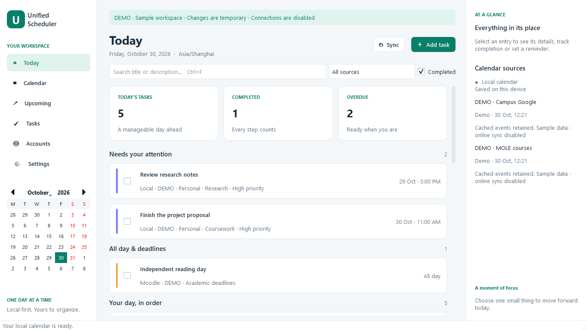
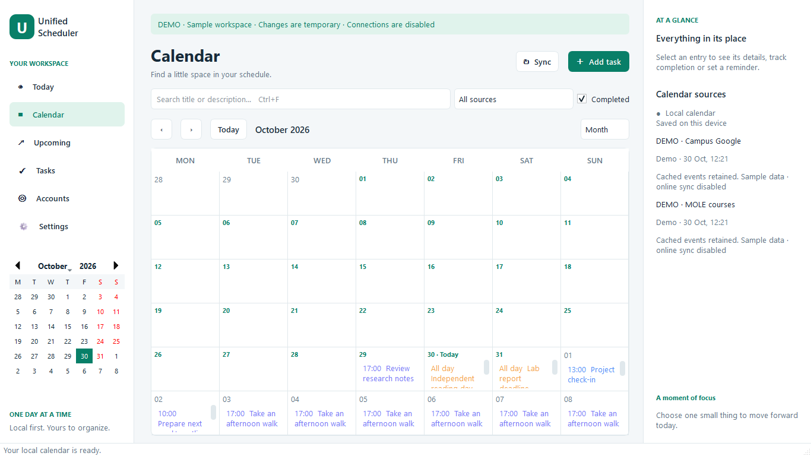

Google Calendar
Connect multiple Google accounts and choose the calendars you want to see. Your original events stay in Google.
A native Windows desktop app
Classes, meetings, deadlines, and the things you want to get done. Bring them together in a calmer view of your day.
Local tasks work offline. Connect calendars when you’re ready.

Less switching. More perspective.
Keep the sources you already use. See what matters next without piecing your schedule together across tabs.
Connect multiple Google accounts and choose the calendars you want to see. Your original events stay in Google.
Add your private calendar subscription URL to bring available coursework dates and academic deadlines into view.
Create local tasks and events with priorities, recurring dates, and reminders. An online account is optional.

A place to put it all
Today, Upcoming, and day, week, month, and agenda views give you different ways to see your schedule.
Track completion and set reminders. Leave the app running in the Windows tray to keep reminders active.
Local plans and previously synchronized events remain available offline. Refresh connected calendars when you’re online.
A personal workspace
Calendar content is saved locally on your computer. Connected account tokens and private Moodle URLs are kept in the Windows credential store.
Read how your data is handledGoogle sign-in happens on Google’s page in your browser.
Disconnect a source without changing its original calendar.
No developer-operated sync server or app telemetry is built in.
Make yourself at home
Download and open the Windows installer, then launch Unified Scheduler from the Start menu. Python isn’t required.
Choose Connect Google Account and approve access in your browser. Add a Moodle calendar URL if you use one.
Add a task, choose a view, and plan at your own pace. You can use the local calendar on its own, too.
Your next step
Download the latest Windows package and make room for your day.
Windows 64-bit · Portable ZIP
Extract the ZIP before opening UnifiedScheduler.exe. Google sign-in uses your browser. This package is unsigned; Google OAuth verification is not claimed here.
Release notesYes. Local tasks and events work without an account or internet connection. Previously synchronized events are available offline, within the range that was cached.
Google and Moodle connections are read-only. Marking an imported event complete records your own tracking state in this app; it does not change the original event or submit coursework.
The application must be running. Minimize it to the Windows system tray to keep reminders active. Windows notification settings can affect whether alerts appear.
The app’s Google authorization settings and your account’s policies affect access. A project in Google’s Testing mode accepts only allowed test users. Publishing and verification are managed by the developer and Google; changing a setting in this desktop app cannot bypass those restrictions. Check the release notes for the current status.